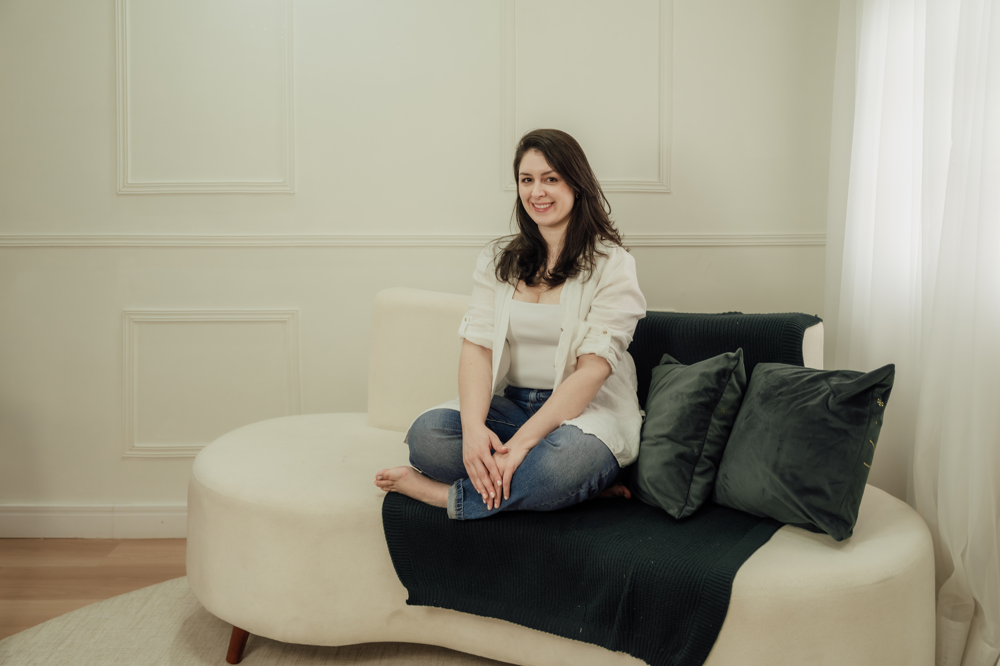

Um espaço seguro para explorar sua história, (re)encontrar-se e desenvolver ferramentas práticas para viver com mais presença.
É possível aprender a viver melhor, de uma forma mais leve e sem tanto custo emocional. Meu papel é construir com você um caminho que conduza a uma vida com mais autonomia, equilibrada e tranquila, na qual seja possível ampliar a flexibilidade diante das dificuldades, usufruir do bem-estar que a vida pode proporcionar e, ao mesmo tempo, afastar-se do sofrimento.
Para isso, quero conhecer você para além da dificuldade que trouxe você à terapia: sua história, suas relações e aquilo que tem importância na sua vida. É a partir dessa compreensão que trabalharemos para construir uma vida mais significativa.
Psicoterapia individual
Pessoas acima de 18 anos
Pessoas que falam português e residem no Brasil ou no exterior
Online e Presencial em Curitiba/PR
Sou psicóloga, com atuação clínica e foco em atendimento de adultos, especialmente em casos relacionados a Autismo (TEA), TDAH, Altas Habilidades/Superdotação (AH/SD), dupla excepcionalidade, transtornos de ansiedade e transtornos depressivos.
Busco me manter atualizada com as pesquisas e inovações da área. Meu compromisso é oferecer um atendimento ético, acolhedor, fundamentado em evidências científicas e sem julgamentos. Como cada pessoa é única, o atendimento é cuidadosamente adaptado às suas necessidades, ao seu ritmo e ao seu contexto.
Atualmente, trabalho com psicoterapia, especialmente com pessoas neurodivergentes, tanto presencial (em Curitiba/PR) quanto online.
Antes da Psicologia, me formei em Administração e atuei por 15 anos em áreas administrativas e de Recursos Humanos. Essa experiência me proporcionou uma compreensão mais refinada das dinâmicas de trabalho e das organizações, o que contribui para o cuidado de demandas ligadas à carreira e às relações profissionais.

A primeira sessão é um momento inicial de acolhimento, escuta e compreensão da sua demanda. É o espaço para conhecer a sua história, entender as dificuldades que você está enfrentando, alinhar expectativas e esclarecer dúvidas sobre o processo terapêutico. A partir desse primeiro contato, começamos a construir juntos os objetivos da terapia.
Não existe um tempo fixo — depende dos seus objetivos e do seu ritmo. A terapia comportamental é prática e focada, e ao longo do processo avaliamos juntos a evolução.
A primeira sessão pode ser paga de forma avulsa, permitindo que você tenha um contato inicial com o meu trabalho e saiba como irei conduzir o seu acompanhamento com base no que trouxer nessa primeira sessão. Decidindo continuar com o processo de psicoterapia, o pagamento passa a ser feito de forma mensal, com os horários reservados para você. Para consultar valores e disponibilidade de horários, basta entrar em contato via WhatsApp.